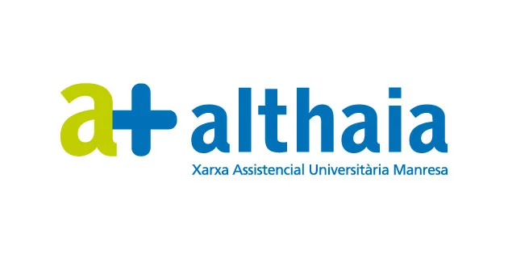
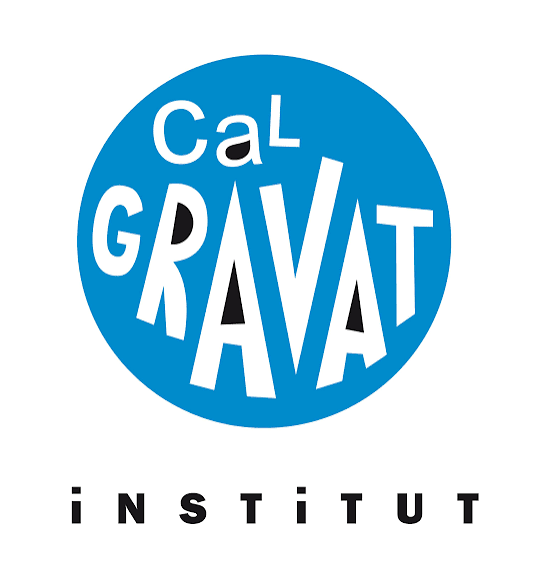
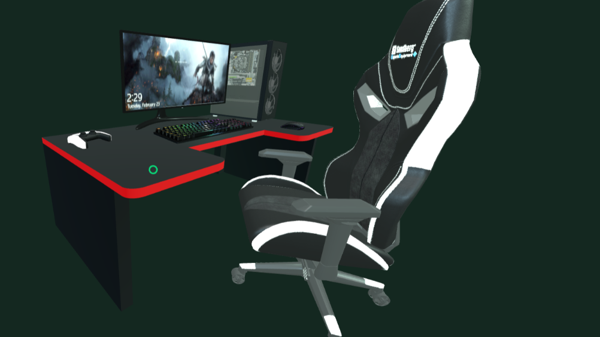

515H

Pràctiques al Departament d'Innovació
Althaia · Xarxa Assistencial Universitària de Manresa
515 hores de pràctiques participant en projectes d'innovació i tecnologia aplicada a l'entorn sanitari. Visitar Althaia →Tècnic superior · ETIC · desenvolupament
Sóc Oriol Dorado Galofré, tècnic superior en Desenvolupament d'Aplicacions Multiplataforma i actualment cursant Enginyeria de Sistemes TIC a l'UPC Manresa. M'apassiona construir projectes que uneixen funcionalitat, experiència d'usuari i rigor tecnològic.
Desenvolupament d'aplicacions multiplataforma
Enginyeria de sistemes TIC
Sobre mi
La meva trajectòria combina la formació acadèmica amb projectes personals orientats a la resolució de problemes reals. M'interessen el desenvolupament web, la lògica de programació, la usabilitat i la creativitat aplicada a productes digitals.
He treballat amb HTML, CSS, JavaScript, TypeScript, React, Node.js, Java, Python, Android, Unity i altres eines que em permeten transformar idees en experiències completes i funcionals.
Formació

Althaia · Xarxa Assistencial Universitària de Manresa
515 hores de pràctiques participant en projectes d'innovació i tecnologia aplicada a l'entorn sanitari. Visitar Althaia →UPC Manresa
Actualment cursant la formació en enginyeria de sistemes TIC.Institut Castellet
Formació tècnica finalitzada, centrada en desenvolupament d'aplicacions web, mòbils i lògica de software.
Institut Cal Gravat
Base acadèmica enfocada en tecnologia, ciències i l’aplicació pràctica del pensament analític.Projectes
Joc de conducció 3D basat al Parc Güell amb Unity i C#, pensat per oferir velocitat, immersió i un ambient visual molt més atractiu.

Contacte
Si vols col·laborar, fer una proposta o simplement connectar, estic obert a nous projectes, oportunitats i converses creatives.